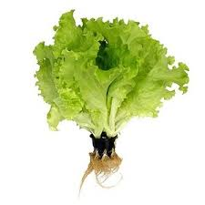
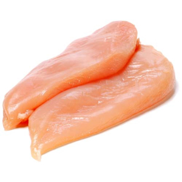
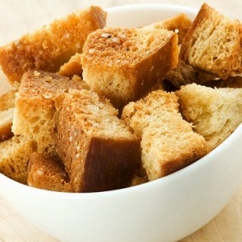
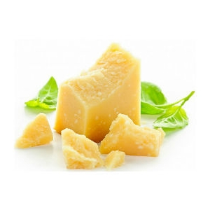
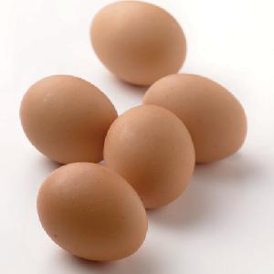
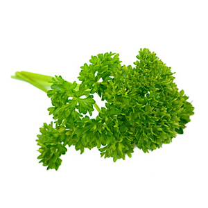
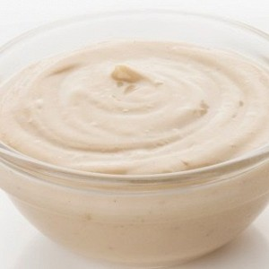

"Цезарь", как он есть
Ингридиенты "Цезарь"
Готовим многими любимый салат Цезарь по классическому рецепту - из свежих листьев салата, курицы-гриль, крутонов и пармезана, а также с фирменным соусом аля Цезарь. Объедение, а не салат.
Описание приготовления:
Давайте приготовим самое популярное блюдо в мире - Салат Цезарь классический рецепт был придуман итальянским поваром Цезарем Кардини, который владел несколькими ресторанчиками в Мексиканском городе Тихуана. Салат Цезарь стал очень популярен по всему миру благодаря простоте приготовления и незабываемому вкусу. Делюсь классическим рецептом приготовления - теперь вы всегда будете знать как приготовить салат "Цезарь"! На здоровье!
Ингредиенты:
- Листья салата — 100 Грамм 
- Куриное филе — 200 Грамм 
- Крутоны (сухарики) — 50 Грамм 
- Пармезан — 50 Грамм 
- Яйца куриные — 2 Штуки 
- Петрушка — - По вкусу 
- Соус для цезаря — 50 Миллилитров 
{kind=link}
{kind=link}
{kind=link}
{kind=link}
{kind=link}
{kind=link}
{kind=link}
Количество порций: 2